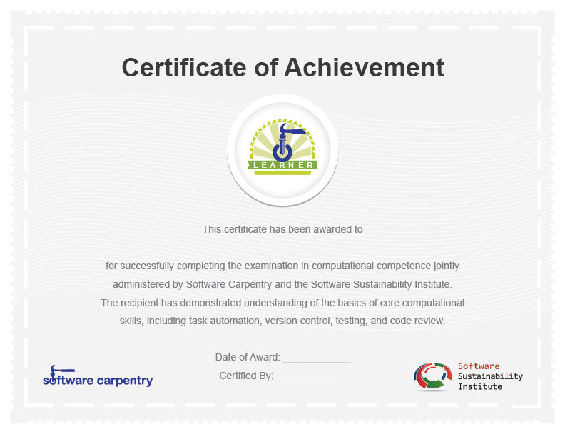

Back in August we did an alpha test of our driver's licence for DiRAC in conjunction with The Software Sustainability Institute. In the spirit of iterative development, we revised our test in light of our experiences and two weeks ago we did a 2nd dry-run. Four researchers based at University College London kindly agreed to take part as examinees, Dr. Jeremy Yates of DiRAC made the local arrangements, and James Hetherington of UCL, a newly-appointed fellow of The Software Sustainability Institute, provided local assistance.
In light of the alpha test, we'd made the following changes,
Examinees were told that they could use the web, "man" pages and any other resources a software developer uses day-to-day - we're not testing recall but assessing real working practices.
After consultation with Jeremy, we replaced Subversion with Git for the version control tasks. To avoid having to set-up examinee-specific accounts, we provided a local Git repository to examinees as part of a ZIP file containing all the exam material.
The expectation to use version control at each stage, to add answers, was made more explicit.
We added an example of a Python test function and a command-line invocation of "nosetests", for examinees that haven't written a Python unit test or used "nosetests" before.
We alloted one hour to the dry-run but, on the day, extended this to two hours. Within this time the examinees attempted all the exercises (version control, shell, automation and Make and unit testing) bar a code review exercise. Experiences and observations included:
Examinees learned what they needed on-the-fly (especially for Make and Git) looking everything up online and discussing it. The examinees felt that a primer or more preparation time would have been useful.
We allowed examinees to share hints and tips, as asking colleagues is a great way to get help. However, in the test, examinees shouldn't share the actual answers to the exercises!
We allowed examinees to write shell scripts in Python or Ruby, rather than constraining them to Bash, as we're assessing knowledge of concepts not specific tools.
A non-standard Makefile, with no default target, and a less-than-clear question meant that the Make question devoured a lot of time and had to be curtailed. While some examinees had used Make before, this had been to compile code, not to regenerate data files.
Running the test remotely is possible but examinees (and the examiner!) need a local expert in the room with them.
Despite these challenges, the examinees stated that they'd learned a lot and the test was valuable in highlighting things that they didn't know. This is a very good outcome and one which we'd hope such a test would achieve.
We are now implementing changes in light of the above and will be doing a 3rd dry-run week beginning 25th February. We have also drafted a certificate which all researchers who complete the test will receive (along with a Mozilla open badge) when it goes live:

We look forward to reporting on our experiences of our next dry-run
Originally posted 2013-02-13 by Mike Jackson in Community, Education.